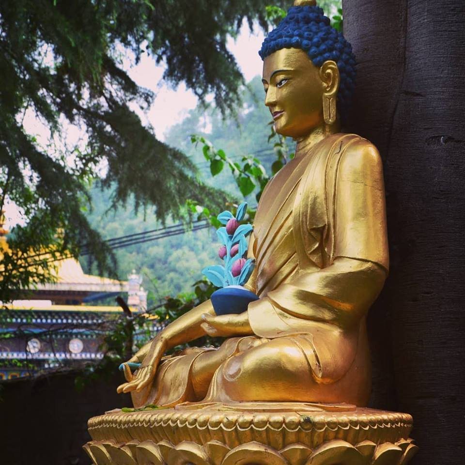

Yoga, cultuur en natuur op het dak van de wereld
Negen of tien dagen cultuur, natuur, inspiratie, mooie wandelingen en bezinning
In 2012-2013 heb ik een jaar met mijn gezin in een van de drie koningssteden Patan gewoond. Ik was als yogadocent verbonden was Pranamaya Yoga, het yogacentrum toen van Kathmandu.
Tijdens dat jaar heb ik vaak geroepen hoe indrukwekkend en cultuurrijk alles was, het land met de hoogste bergen van de wereld. Ik wilde dat meer mensen dit met eigen ogen konden zien en beleven. Aangemoedigd door anderen ontstond het idee een culturele yoga wandelreis te organiseren dan ook al snel.
Vanaf 2014 ontvang ik ieder voor- en najaar een fantastische groep mensen die allemaal blij zijn EN het ook spannend vinden om mee te gaan naar Nepal! Al meer dan 450 mensen gingen je voor.

De Yogareis is ideaal voor iedereen die van yoga houdt én die de sfeer, oudheid, natuur en cultuur van het prachtige Nepal – het dak van de wereld – wil ervaren. De omgeving en de activiteiten geven je ruimte voor inspiratie, innerlijke kracht, bezinning en nieuwe ervaringen. Met deze reis verleg je letterlijk en figuurlijk je grenzen.
Zoals schrijfster Marjoleine Vos zegt: “op reis valt de beschermende laag weg van de dagelijksheid weg en kom je onbevangener tegenover je eigen leven te staan”.
Dit zal je ook zeker ervaren in Nepal omdat alles anders is dan in Nederland; als je er bent zal je begrijpen en voelen waarom Nepal zo bijzonder en fijn is.
Nepal is een heerlijk land. Overal kun je besneeuwde toppen van de indrukwekkende Himalaya zien. Het is tevens het geboorteland van Boeddha. Het is een land met veel cultuur, beweging, chaos, kleur en geur. Het heeft een rijke Hindoeïstische en Boeddhistische historie, wat overal voelbaar is op straat en bij spirituele plekken, zoals in tempels en stupa’s. Het eten is er heerlijk en de mensen zijn bijzonder aardig.
Naast dagelijkse yoga (slow flow, yin yoga, gi gong), ademwerk, meditatie en het maken van prachtige wandelingen, heb je tijdens de reis genoeg tijd om lekker rond te dwalen, zelf erop uit gaan en te relaxen! Tijdens de reis verblijven we in zeer goede, mooie authentieke en veilige accommodaties, zodat jij optimaal kan genieten.
Steeds meer mensen plannen hun reis lang van tevoren. Wil je op de interesselijst voor een van de reizen mail me dan. Dan ontvang je als eerste info.
Bij alle reizen is het advies om een dag eerder aan te komen voor je jetlag. Deze nacht kan ik voor je bij reserveren in het hotel waar je reis begint. Je wordt dan opgehaald van het vliegveld.
Mocht je vragen hebben, klik op veel gestelde vragen Yogareis Nepal of neem dan gerust contact met me op. Aan de telefoon of ontmoeting met een kop thee/koffie vertel ik je graag meer over de reis. Namaste!
Hier vind je de voorwaarden voor deze reizen. Zie verder ook onze socials:

Ik wou je echt nog eens heel veel bedanken voor de mooie reis die ik samen met jou en de groep mocht maken. Nepal zit in mij nu, met niets dan mooie herinneringen. Naast het materiele van de reis dat allemaal perfect verlopen is was het ook voedsel voor de ziel. De fijne yogalessen, de meditaties, het landschap, het buiten zijn, de inhoud… en vooral ook kennismaking met jouw ‘ZIJN’ Jij bent zo een mooie vrouw (wist je dat?) Jouw uitstraling, jouw zachtheid, jouw manier van omgaan met ons… het was allemaal zo warm en eerlijk. Dat maakte voor mij ook de reis compleet.
Voor mij was het de perfecte match tussen yoga, natuur en cultuur. Maar ook tussen geleide activiteiten en vrije tijd. Ik ben nog steeds in de wolken. Het laat mij niet los. Ook de groep vond ik zo goed, alle leeftijden en iedereen was er voor iedereen. Iedereen hielp en deed ‘klappekes ‘ met iedereen. Van de een wist je wat meer dan van de ander maar dat is best ok.
Wat ik ook zeker meedraag was het afscheidsritueel, hoe je met alleen je ogen zo veel kon vertellen. Ik heb echt een traan moeten wegpinken en had toch wel een krop in mijn keel. Daar sprak zo veel uit: van een knipoog tot een stralende lach, van een knuffel tot een knik. Mag ik het zelfs interpreteren als een liefdevol afscheid zonder woorden? Ja toch.
Marleen, Oktober 2022
Dank je wel voor een onvergetelijke Nepal ervaring en heel veel bijzondere momenten. Je lessen zijn van een hoogstaand niveau. We hebben genoten van je wijsheden die je met ons hebt gedeeld, de afwisseling en de adembenemende plekken. Je humor, mooie energie en sprankelend ZIJN maken de reis helemaal af.
Veel liefs van de hele groep…………
Op mijn eerste Nepalreis maakte ik kennis met een levendig en tegelijk religieus/spiritueel Kathmandu. Op twee andere prachtige locaties, een guesthouse van een klooster en een Eco-resort in de bergen, genoot ik van natuur, het Boeddhistisch kloosterleven en fabelachtige uitzichten op de Himalaya. We genoten van verrukkelijke (vegetarische) maaltijden.
De Yogalessen van Marion waren voor mij als beginner een openbaring! De meditaties waren inspirerend en leerzaam tegelijk. Kortom, een prachtige reis heel vakkundig door Marion in elkaar gezet en met veel plezier en in een ontspannende sfeer door haar geleid. Voor mij een blijvende en hartverwarmende herinnering.
Jan, Maart 2019
Nogmaals bedankt voor het organiseren van de prachtige reis. Ik heb er zo van genoten. Nooit geweten dat reizen zo leuk kon zijn. Het lukt me (nog) prima om ondanks de hectiek hier, het Nepal gevoel vast te houden.
Helga, Maart 2020
Voor mij was de yogareis naar Nepal een langgekoesterde droom die uitkwam en nog mooier was dan ik had durven dromen! De reis pikkelde al mijn zintuigen en ik kwam vol inspiratie en met rijke herinneringen weer thuis. De liefde van Marion voor Nepal is in alles voelbaar en het gaf mij als deelnemer heel veel mooie en onvergetelijke ervaringen, maar zorgde ook voor een bepaalde rust en veel plezier!!!
Marion is een warme en toegankelijke yogadocent en reisleider die met veel souplesse onze groep begeleidde. En bovenal is Marion gewoon een heel leuk mens!! Nepal heeft mijn hart gestolen en ik weet zeker dat ik nog eens terug ga!!! Ik sluit ook niet uit dat ik nog een keer met jou yogareis meega naar Nepal!!
Elvira, 2023
Wat voel ik me rijk en dankbaar dat ik deze prachtige week in Nepal heb mee mogen beleven ! Iedere dag weer werd ik verrast met prachtige locaties om te overnachten met heerlijk eten, mooie wandelingen met warme , kleurrijke ontmoetingen en geweldige yoga lessen van Marion. Een reis om nooit meer te vergeten! De enorme kennis van Marion over yoga, het boeddhisme en de Nepalese cultuur maakten de reis voor mij heel waardevol! Een reis om nooit meer te vergeten!
Petra, 2023
Zonder al teveel verwachtingen (want mega druk qua werk) begon ik aan de reis naar Nepal. En dat is achteraf maar goed ook want vooraf had ik dit niet kunnen bedenken! Wat wás het in alle opzichten heerlijk. Elk uur werden zintuigen geprikkeld, elke nieuwe locatie was anders en verassend en de yoga-lessen waren goed uitgebalanceerd verankerd in het programma.
De opbouw van de reis was erg fijn en ook het feit dat de 2 Kathmandu-locaties verspreid over het programma werden bezocht vond ik prettig want ze waren zó anders dat het compleet andere steden leken en een potentiële overkill werd vermeden. Daar waar de ene locatie afgelegen en basic qua voorzieningen was (eten-douche etc), was de andere locatie luxe en stedelijk. Ook die afwisseling heb ik als erg prettig ervaren! Daarnaast heeft het feit dat we wat langer voor-, en na de uiteindelijke Yogareis in Nepal verbleven wat mij betreft zeer positief bijgedragen.
Al met al kijk ik terug naar een zeer goed verlopen, goed begeleide en uitgebalanceerde reis naar prachtig Nepal, zowel de reis als het land staan in m’n geheugen en hart gegrift. Ik ga graag nog een keer mee bij gelegenheid! De reis was niet geweest wat ie was zonder jouw bezielende begeleiding, lokale contacten, kennis van het land en fijne yoga-lessen; ik dank jou en Michel bij deze voor jullie toewijding!
Rineke, 2023
Lieve Marion en Michel, nogmaals dank voor de bijzondere reis waar ik intens van heb genoten. Ik vond het een overweldigende ervaring met mooie, vredelievende mensen, bijzondere rituelen, kloosters en stoepa’s. Bovendien was de reis super geregeld, de locaties waren sfeervol en er was een fijne en relaxte sfeer in de groep, mede dankzij het feit dat jullie zelf zo chill en relaxed waren. Het was ook een gevarieerde reis met yoga- en meditatielessen op hoog niveau maar daarnaast ruimte voor cultuur, wandelingen en tijd voor jezelf.
Kortom, een reis om nooit te vergeten die me absoluut heeft verrijkt. Ik ga sparen voor de volgende! (-:
Magosja, 2023
Al meer dan 450 mensen gingen mee naar Nepal
Veel gestelde vragen over de reizen naar Nepal
Je wordt opgehaald van het vliegveld op de begindag van de reis of als je een dag eerder aankomt. Buiten het vliegveld wacht dan iemand met een bordje met de naam Marion Werger erop. Je wordt naar het hotel gebracht waar de reis begint. Kom je op een andere dag aan of overnacht je in een ander hotel dan waar de reis begint, dan zien jezelf je vervoer te regelen. Op de laatste dag van de reis wordt je drie uur voor vertrek van je terugvlucht weer naar het vliegveld gebracht. Vlieg je op andere dagen naar huis, dan dien je zelf je taxi naar het vliegveld te regelen.
Omdat de reis om 13:30 begint, adviseer ik je een vlucht te kiezen die in de loop van de ochtend aankomt. Komt je vlucht later aan, dan is dat geen ramp en sluit je later aan. Je kunt uiteraard ook overwegen om een dag eerder aan te komen wat erg fijn is voor het acclimatiseren. Ik kan dan een extra nacht voor je bijboeken in het hotel waar de reis begint: kosten 1 persoonskamer €80,- en 2 persoons kamer €50,- per persoon . Dit is inclusief ontbijt, tax en VAT.
De reis eindigt op de laatste dag van de reis na het ontbijt. Wil je nog een nacht langer blijven in het laatste hotel, dan kan ik deze voor je bijboeken. Zie eerder genoemde prijzen.
Mocht je na de reis je verblijf in Nepal willen verlengen dan kan dat uiteraard. Het is prachtig om te wandelen, een trekking te maken, of naar Pokhara of Chitwan te gaan. Je kan je verdere verblijf zelf uitzoeken en regelen (Lonely Planet geeft goede informatie), of dit laten regelen/organiseren via mijn samenwerkend reisbureau/netwerk.
Tijdens de reis verblijven we op prachtige unieke authentieke locaties waarin cultuur, yoga/meditatie en natuur worden afgewisseld. We ervaren rust in een Tibetaans klooster en bij de ecologische boerderij in de bergen EN cultuur, religie, chaos en kleur in de stad Patan of Bhakthapur, Kathmandu en Boudha. De locaties zijn op maximaal 2 uur reizen van elkaar. De reis naar de Pokhara Valley heeft langere reistijden omdat we de bergen in gaan.
Tijdens de reis verblijven we in de Kathmandu Valley op 1300 meter en kom je eventueel op plaatsen als Namo Buddha op 1700 meter en/of Shivapuri National Park met hoogtes tot zo’n 2300 meter. Hoogteziekte kan optreden vanaf 2500 meter, maar meestal treedt hoogteziekte op pas boven de 3500 meter.
We reizen rondom de Kathmandu Valley en eventueel Pokhara. Voor advies over inentingen en vaccinaties kun je terecht bij http://www.ggdreisvaccinaties.nl.
Bij aanmelding van de reis ontvang je een boekingsformulier en reisvoorwaarden. Hierin staat onder andere wanneer je de reis dient te betalen en wat de voorwaarden zijn bij het annuleren. Een reis- en annuleringsverzekering is verplicht af te sluiten voor de reis.
Deze dien je zelf te boeken. Dit kan direct bij luchtvaartmaatschappijen zoals Qatar Airways, Turkish Airlines en KLM/Fly Dubai of bij organisaties als cheaptickets, vliegwinkel.nl of budget air. Let op: dit is geen advies voor een specifieke organisatie dus zorg dat je je zelf goed informeert over de actuele betrouwbaarheid van de organisatie waar je boekt.
De kosten van een retourvlucht naar Kathmandu zijn afhankelijk v.d. vliegmaatschappij waarmee je vliegt en duur overstaptijden. De prijs van een ticket ligt rond de 1000 euro. Hoe eerder je boekt je goedkoper.
De kosten van de reis zijn gebaseerd op 1 of 2 persoonskamer. Bij reservering hoor ik graag waar je gebruik van wil maken. Wanneer je ervoor gekozen hebt om een gedeelde tweepersoonskamer te boeken, dan doen wij ons uiterste best om een kamergenoot voor je te vinden. Mocht dit niet lukken, dan zijn wij genoodzaakt om de 1 persoonskamer toeslag door te berekenen kort voor aanvang van de reis. Ik neem in dit geval uiteraard contact met je op.
Ja, dat kan met de yogareis, het volgen van yoga en meditatie is niet verplicht. Kosten van de reis zijn hetzelfde! Daarnaast zou je ook de mountainbikereis kunnen overwegen. Deze loopt parallel aan de yogareis. De eerste 2 dagen en de laatste dag zijn hetzelfde programma en zijn jullie dan samen. De overige dagen is het programma anders en fiets je van plek naar plek door de prachtige Kathmandu Valley. Zie https://www.marionwerger.nl/mtb/ voor meer informatie.
Tijdens de reis worden yoga aangeboden in flow yoga, slow flow, yin yoga, yoga nidra en qi gong. In- en ontspanning, yoga voor iedereen. Opties worden aangereikt! De basis in alle bewegingen is het werken met de adem, je levensenergie. Meditatie wordt beoefenend in de traditie van vipassana/mindfulness meditatie. Yoga en meditatie ervaring is niet noodzakelijk, wel fijn! Voor sommige deelnemers is de yogareis een eerste kennismaking met yoga en meditatie en voor anderen is het een verdieping. Voor meegaande yogadocenten is het fijn om zelf geen les te geven, te ontvangen en inspiratie op te doen.
Die maaltijden die inclusief zijn, zijn vegetarisch. Op verzoek kan er rekening gehouden worden met andere dieet wensen. Overige maaltijden zijn voor eigen kosten.
Voor Nepal heb je een visum nodig en moet je paspoort nog 6 maanden geldig zijn! Een visum kan je verkrijgen bij het Nederlandse consulaat van Nepal in Amsterdam. Info op https://nepal.nl/consulaat/
Met dit document hoop ik je eerste vragen te hebben beantwoord en anders hoor ik het graag.
| Marion Werger | Yoga, Coaching, Ademwerk & Reizen naar Nepal |
|---|---|
| Aangesloten bij | de Stichting Stress & Burnout |
| Contact | www.marionwerger.nl • info@marionwerger.nl • 06 57563717 |
| KvK | 58377921 |
Reisvoorwaarden Nepal reizen
De aanbetaling van de boeking bedraagt €175,-. Na aanmelding ontvang je hiervoor een factuur. Voor het restant van de reissom ontvang je een maand later de restfactuur. Bij boekingen binnen vier maanden voor vertrek dient de gehele reissom in één keer voldaan te worden. Je deelname aan de reis is bevestigd na betaling van de facturen. Facturen dienen binnen 14 dagen te worden betaald. In overleg kan de factuur in twee termijnen worden betaald.
Je hebt het recht de reis per email (info@marionwerger.nl) te annuleren. Hierbij zijn de volgende kosten verschuldigd:
Wil je je deelname overdragen? Dat kan. Regel zelf een vervanger en betaal alleen €175,- inschrijvingskosten.
De reis gaat door bij 8 deelnemers. Eventuele wijzigingen in het programma en/of locatie met een kleine groep dan voorbehouden. Hiervan wordt de deelnemer uiterlijk 1 maand van tevoren op de hoogte gebracht. Mochten er omstandigheden zijn dat ik de reis moeten afzeggen (bij noodgevallen als ziekte of ernstige persoonlijke omstandigheden van mij), dan is het streven om de Yogareis wel door te laten gaan met ingewerkte yoga-collega’s (co-teachers) die de reis kunnen dragen en overnemen. Mocht toch onverhoopt de reis geannuleerd worden, dan krijgt de deelnemer de kosten van de Yogareis minus 50 euro retour. Let op: de kosten voor het vliegticket blijven in dit geval voor risico van de deelnemer.
Een algemene reisverzekering inclusief medische kosten is verplicht en dient door de deelnemer zelf te worden afgesloten. Je kunt annuleringskosten (zowel van de yogareis als het vliegticket) voorkomen door een annuleringsverzekering af te sluiten. Dit wordt sterk aanbevolen en dient ter dekking van de kosten wanneer jij als deelnemer onverhoopt moet annuleren. Check dit altijd nog wel zelf even bij je verzekeringsmaatschappij. Er wordt geen geld retour gegeven als je tijdens de reis zelf onverwachts de reis moet afbreken (dit dekt ook een reisverzekering als het goed is).
Er is een aansprakelijkheidsverzekering voor de reisbranche afgesloten die in voorkomende gevallen een dekking kent van maximaal € 2.500.000,- per gebeurtenis. Deze verzekering is afgesloten bij Allianz Nederland Groep N.V., Coolsingel 120, 3011 AG Rotterdam.
Marion Werger Yoga & Coaching stelt zich niet aansprakelijk voor blessures, verlies of schade aan bagage en verplichtingen gemaakt voor en tijdens de reis. Ook kan er geen aansprakelijkheid gemaakt worden voor veranderingen, omstandigheden of onderbrekingen van het programma buiten de schuld om van Marion Werger Coaching & Yoga tijdens deze Yogareis. Marion Werger Yoga & Coaching is niet aansprakelijk voor de gevolgen die voortvloeien uit annuleringen of wijzigingen van internationale vluchten. Marion Werger Yoga & Coaching aanvaardt geen schade waarvoor aanspraak bestaat op een reisverzekering. Indien de verzekeraar niet tot uitkering over gaat, dan gaat de aansprakelijkheid van Marion Werger Coaching & Yoga niet hoger dan de totale reissom. Marion Werger Yoga en Coaching is nooit aansprakelijk voor schade die het gevolg is van tekortkomingen of nalatigheid van de deelnemer.
Als deelnemer ben je zelf verantwoordelijk voor je gezondheid. Ook ben je zelf verantwoordelijk om te bepalen of je gezondheid deelname aan activiteiten toestaat. Je bent zelf verantwoordelijk voor het in de gaten houden van de laatste stand van zaken ten aanzien van gezondheid, waaronder vaccinaties. Deze vind je bijvoorbeeld op http://www.ggdreisvaccinaties.nl en http://www.wijsopreis.nl.
Reizen in Nepal heeft een avontuurlijk karakter. De cultuur, procedures, mentaliteit, omstandigheden en gewoontes zijn anders dan in Nederland. Het kan dus zijn dat door onvoorziene omstandigheden de reis moet worden aangepast. Het programma van de reis zoals in de brochure en/of de website vermeld staat is een weergave van de reis of basis van vorige reizen maar kan in voorkomende gevallen afwijken.
Als je een klacht hebt, maak dat dan zo snel mogelijk kenbaar aan je reisbegeleider. Die zoekt dan naar een oplossing. Mocht er geen voldoende oplossing komen, dan kun je tot twee weken na het einde van de reis schriftelijk je klachten kenbaar maken via info@marionwerger.nl.
| Marion Werger | Yoga, Coaching, Ademwerk & Reizen naar Nepal |
|---|---|
| Aangesloten bij | de Stichting Stress & Burnout |
| Contact | www.marionwerger.nl • info@marionwerger.nl • 06 57563717 |
| KvK | 58377921 |
Bij iedere les of sessie is het mijn doel om mensen een gevoel van ’thuis komen’ te geven. Heb je een vraag of wil je een afspraak maken? Neem gerust contact met mij op.